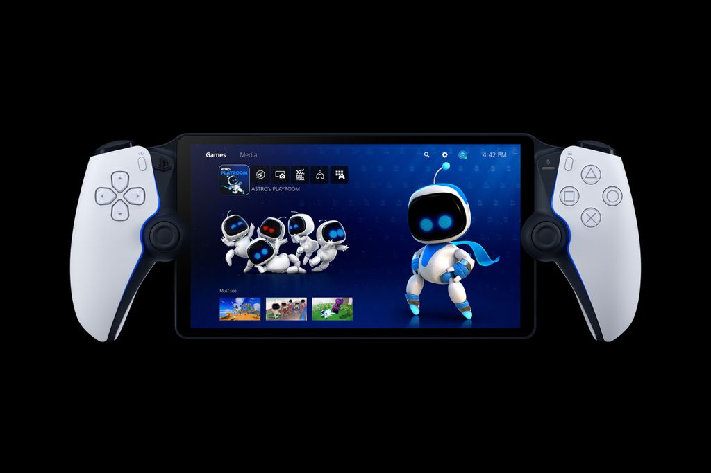

SONY ANUNCIA PLAYSTATION PORTATIL
A Sony anuncia no dia 23 de agosto,o "PlayStation Portal" uma versão portátil do novo Playstation 5. Custando entorno de 200 dolares- 950 na cotação atual- sendo uma segunda tela praticamente.
O aparelho conta com uma tela LCD de 8 polegadas com resolução 1080p e suporte a 60 fps e que é integrada a dois controladores que lembram bastante o joystick do PS5. Tanto que eles trazem as mesmas tecnologias, incluindo os gatilhos adaptáveis e feedback háptico que marcam o DualSense.